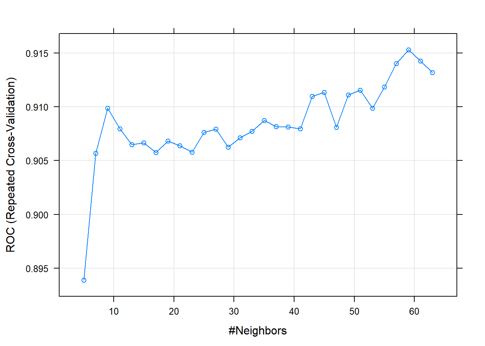

K Nearest Neighbors - KNN
library(class)
library(dplyr)##
## Attaching package: 'dplyr'## The following objects are masked from 'package:stats':
##
## filter, lag## The following objects are masked from 'package:base':
##
## intersect, setdiff, setequal, unionlibrary(caret)## Loading required package: lattice## Loading required package: ggplot2library (ROCR)
library(MASS)##
## Attaching package: 'MASS'## The following object is masked from 'package:dplyr':
##
## selectlibrary(hmeasure)
source("funcs.R")
data(Pima.te) Cargamos los datos que utilizaremos para el entrenamiento, el test y la validación:
dataTrain <- readRDS("datasetTrain.rds")
dataTest <- readRDS("datasetTest.rds")
dataValidation <- readRDS("datasetValidation.rds")
#dataTrain<- readRDS("datasetTrainTransformed.rds")
#dataTest<- readRDS("datasetTestTransformed.rds")
#dataValidation<- readRDS("validationTransformed.rds")Procedemos a despejar de los dataset la variable objetivo original SalePrice. De la cual creamos la variable GrupoPrecio, del tipo categorica.
dataTrain <- dataTrain %>% dplyr::select(-SalePrice)
dataTest <- dataTest %>% dplyr::select(-SalePrice)
dataValidation <- dataValidation %>% dplyr::select(-SalePrice)
group <- c('TotalSF','LotArea','GrLivArea','GrupoPrecio')
dataTrain <- dataTrain %>% dplyr::select(group)
dataTest <- dataTest %>% dplyr::select(group)
dataValidation <- dataValidation %>% dplyr::select(group)A continuación preparamos los dataset para entrenar el modelo y posteriormente evaluar como se comporta con el conjunto de test y finalmente con el grupo de validación.
XTrain <- dataTrain %>% dplyr::select(-GrupoPrecio)
YTrain <- dataTrain$GrupoPrecio
XTest <- dataTest %>% dplyr::select(-GrupoPrecio)
YTest <- dataTest$GrupoPrecio
XValidation <- dataValidation %>% dplyr::select(-GrupoPrecio)
YValidation <- dataValidation$GrupoPreciomodel <- knn(XTrain, XTest, cl = YTrain, k=3)tab_test <- table(model, YTest, dnn = c("Actual", "Predichos"))
(tab_test)## Predichos
## Actual Barato Caro
## Barato 616 77
## Caro 48 48accuracy(tab_test)## [1] 84.15716knn_test_error <- calc_error_rate(predicted.value=model, true.value=YTest)
(knn_test_error)## [1] 0.1584284draw_confusion_matrix(tab_test, "Actual", "Predichos")
#scores.knn <- attr(model, "prob")
#scores.knn[model=="No"] <- 1-scores.knn[model=="No"]
#scores <- data.frame(LDA=scores.knn,kNN=scores.knn)
#results <- HMeasure(YTest,scores)
#par(mfrow=c(2,2))
#plotROC(results,which=1)
#plotROC(results,which=2)
#plotROC(results,which=3)
#plotROC(results,which=4)cm <- confusionMatrix(tab_test)
(cm)## Confusion Matrix and Statistics
##
## Predichos
## Actual Barato Caro
## Barato 616 77
## Caro 48 48
##
## Accuracy : 0.8416
## 95% CI : (0.8142, 0.8664)
## No Information Rate : 0.8416
## P-Value [Acc > NIR] : 0.52385
##
## Kappa : 0.3441
##
## Mcnemar's Test P-Value : 0.01227
##
## Sensitivity : 0.9277
## Specificity : 0.3840
## Pos Pred Value : 0.8889
## Neg Pred Value : 0.5000
## Prevalence : 0.8416
## Detection Rate : 0.7807
## Detection Prevalence : 0.8783
## Balanced Accuracy : 0.6559
##
## 'Positive' Class : Barato
## Obtemos el hiperparametro k (el numero de vecinos que determinaran la clase que predice el modelo), probando una series de valores y evaluando cual da una accuary mayor.
i <- 1
k <- 1
for(i in 1:100){
model <- knn(XTrain, XTest, cl = YTrain, k=i)
tab_test <- table(model, YTest, dnn = c("Actual", "Predichos"))
k[i] <- accuracy(tab_test)
opt <- i
cat(opt, '=', k[i], '')
}## 1 = 82.25602 2 = 83.3967 3 = 84.15716 4 = 84.15716 5 = 84.41065 6 = 85.04436 7 = 84.66413 8 = 84.41065 9 = 85.04436 10 = 86.18504 11 = 86.31179 12 = 85.1711 13 = 85.1711 14 = 85.04436 15 = 85.42459 16 = 85.42459 17 = 85.04436 18 = 84.41065 19 = 84.91762 20 = 84.41065 21 = 84.53739 22 = 84.79087 23 = 84.66413 24 = 85.1711 25 = 84.91762 26 = 84.91762 27 = 85.29785 28 = 85.29785 29 = 84.91762 30 = 84.91762 31 = 84.91762 32 = 85.29785 33 = 85.1711 34 = 84.79087 35 = 84.66413 36 = 84.79087 37 = 84.66413 38 = 84.79087 39 = 84.53739 40 = 84.79087 41 = 85.04436 42 = 85.04436 43 = 85.42459 44 = 84.91762 45 = 85.04436 46 = 84.66413 47 = 84.79087 48 = 85.04436 49 = 84.79087 50 = 84.79087 51 = 84.41065 52 = 84.79087 53 = 84.66413 54 = 84.91762 55 = 84.53739 56 = 84.66413 57 = 84.79087 58 = 84.53739 59 = 84.53739 60 = 84.2839 61 = 83.90368 62 = 83.65019 63 = 83.90368 64 = 84.03042 65 = 83.90368 66 = 83.90368 67 = 83.77693 68 = 83.90368 69 = 83.90368 70 = 83.65019 71 = 83.77693 72 = 83.90368 73 = 83.90368 74 = 83.77693 75 = 84.15716 76 = 84.03042 77 = 84.03042 78 = 84.03042 79 = 83.77693 80 = 84.15716 81 = 83.77693 82 = 84.15716 83 = 84.03042 84 = 84.15716 85 = 83.90368 86 = 84.2839 87 = 84.15716 88 = 84.41065 89 = 84.03042 90 = 84.15716 91 = 84.15716 92 = 84.03042 93 = 84.03042 94 = 83.65019 95 = 83.65019 96 = 83.77693 97 = 83.77693 98 = 83.77693 99 = 83.90368 100 = 84.15716plot(k, type="b", xlab="K-Value", ylab="Accuracy level")
(k)## [1] 82.25602 83.39670 84.15716 84.15716 84.41065 85.04436 84.66413 84.41065
## [9] 85.04436 86.18504 86.31179 85.17110 85.17110 85.04436 85.42459 85.42459
## [17] 85.04436 84.41065 84.91762 84.41065 84.53739 84.79087 84.66413 85.17110
## [25] 84.91762 84.91762 85.29785 85.29785 84.91762 84.91762 84.91762 85.29785
## [33] 85.17110 84.79087 84.66413 84.79087 84.66413 84.79087 84.53739 84.79087
## [41] 85.04436 85.04436 85.42459 84.91762 85.04436 84.66413 84.79087 85.04436
## [49] 84.79087 84.79087 84.41065 84.79087 84.66413 84.91762 84.53739 84.66413
## [57] 84.79087 84.53739 84.53739 84.28390 83.90368 83.65019 83.90368 84.03042
## [65] 83.90368 83.90368 83.77693 83.90368 83.90368 83.65019 83.77693 83.90368
## [73] 83.90368 83.77693 84.15716 84.03042 84.03042 84.03042 83.77693 84.15716
## [81] 83.77693 84.15716 84.03042 84.15716 83.90368 84.28390 84.15716 84.41065
## [89] 84.03042 84.15716 84.15716 84.03042 84.03042 83.65019 83.65019 83.77693
## [97] 83.77693 83.77693 83.90368 84.15716Una vez obtenida la k más optima podemos ver que el modelo funciona mejor.
model <- knn(XTrain, XTest, cl = YTrain, k=11)tab_test <- table(model, YTest, dnn = c("Actual", "Predichos"))
(tab_test)## Predichos
## Actual Barato Caro
## Barato 636 80
## Caro 28 45draw_confusion_matrix(tab_test, "Actual", "Predichos")
accuracy(tab_test)## [1] 86.31179knn_test_error <- calc_error_rate(predicted.value=model, true.value=YTest)
(knn_test_error)## [1] 0.1368821cm <- confusionMatrix(tab_test)
(cm)## Confusion Matrix and Statistics
##
## Predichos
## Actual Barato Caro
## Barato 636 80
## Caro 28 45
##
## Accuracy : 0.8631
## 95% CI : (0.8371, 0.8863)
## No Information Rate : 0.8416
## P-Value [Acc > NIR] : 0.05178
##
## Kappa : 0.3824
##
## Mcnemar's Test P-Value : 9.226e-07
##
## Sensitivity : 0.9578
## Specificity : 0.3600
## Pos Pred Value : 0.8883
## Neg Pred Value : 0.6164
## Prevalence : 0.8416
## Detection Rate : 0.8061
## Detection Prevalence : 0.9075
## Balanced Accuracy : 0.6589
##
## 'Positive' Class : Barato
## Utilizamos el conjunto de validación para comprobar nuestro modelo.
model <- knn(XTrain, XValidation, cl = YTrain, k=11)tab_validation <- table(model, YValidation, dnn = c("Actual", "Predichos"))
(tab_validation)## Predichos
## Actual Barato Caro
## Barato 225 36
## Caro 15 15draw_confusion_matrix(tab_validation, "Actual", "Predichos")
accuracy(tab_validation)## [1] 82.47423knn_validation_error <- calc_error_rate(predicted.value=model, true.value=YValidation)
(knn_validation_error)## [1] 0.1752577cm <- confusionMatrix(tab_validation)
(cm)## Confusion Matrix and Statistics
##
## Predichos
## Actual Barato Caro
## Barato 225 36
## Caro 15 15
##
## Accuracy : 0.8247
## 95% CI : (0.7761, 0.8666)
## No Information Rate : 0.8247
## P-Value [Acc > NIR] : 0.537322
##
## Kappa : 0.2764
##
## Mcnemar's Test P-Value : 0.005101
##
## Sensitivity : 0.9375
## Specificity : 0.2941
## Pos Pred Value : 0.8621
## Neg Pred Value : 0.5000
## Prevalence : 0.8247
## Detection Rate : 0.7732
## Detection Prevalence : 0.8969
## Balanced Accuracy : 0.6158
##
## 'Positive' Class : Barato
##